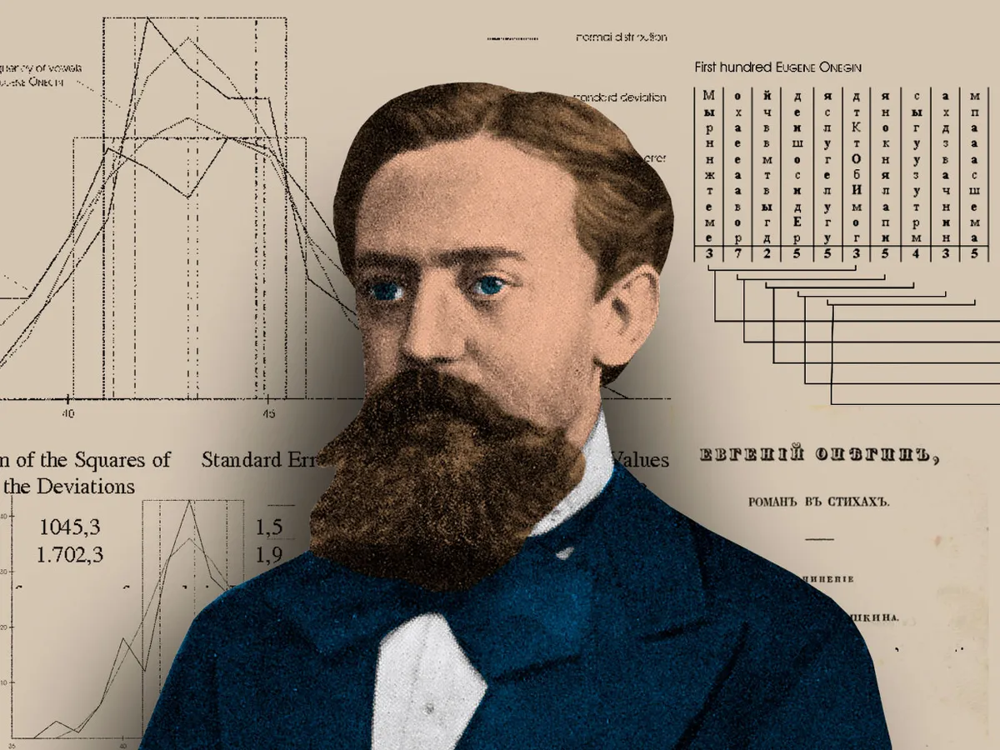
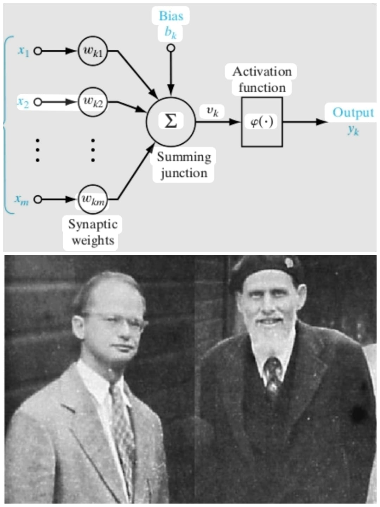

Machine Learning Evolution
From statistical foundations to generative AI
Symbolic
Statistical
Neural
Pre-50
Statistical Foundations
1763
Theory
Bayes' Theorem Foundations
Thomas Bayes's work on probability theory is published posthumously, laying groundwork for Bayesian methods in ML. His theorem provides a way to update the probability for a hypothesis as more evidence becomes available.
Thomas Bayes, Richard Price
1805
Theory
Least Squares Method
Adrien-Marie Legendre describes the "méthode des moindres carrés", widely used in data fitting. This method minimizes the sum of the squares of the residuals between observed and predicted values.
Adrien-Marie Legendre
1812
Theory
Bayes' Theorem Formalized
Pierre-Simon Laplace expands on Bayes' work, formalizing what becomes known as Bayes' Theorem. His work in probability theory would become fundamental to machine learning algorithms centuries later.
Pierre-Simon Laplace
1843
Visionary
Ada Lovelace's Vision

Ada Lovelace foresaw machines processing more than numbers, influencing symbolic AI and machine learning concepts. Her notes on Babbage's Analytical Engine contained what is considered the first computer algorithm.
Ada Lovelace
1913
Theory
Markov Chains

Andrey Markov describes techniques for analyzing poems that later become known as Markov chains. These stochastic models are widely used in speech recognition, bioinformatics, and more.
Andrey Markov
1943
Discovery
Artificial Neuron

Mathematical model that imitates biological neurons, considered the first neural model. The McCulloch-Pitts neuron was a binary threshold unit that became the foundation for artificial neural networks.
Warren McCulloch, Walter Pitts
1950
Pioneering Research
1950
Concept
Turing's Learning Machine
Alan Turing proposes a 'learning machine' that could learn and become artificially intelligent. His paper "Computing Machinery and Intelligence" introduced the Turing Test and conceptualized machine learning.
Alan Turing
1951
Achievement
First Neural Network Machine
Marvin Minsky and Dean Edmonds build SNARC, the first neural network machine capable of learning. This machine used 3,000 vacuum tubes to simulate a network of 40 neurons.
Marvin Minsky, Dean Edmonds
1952
Application
Machines Playing Checkers
Arthur Samuel creates some of the first machine learning programs to play checkers. His program improved through self-play and is considered the first successful self-learning program.
Arthur Samuel
1957
Discovery
Perceptron
Frank Rosenblatt invents the perceptron, generating significant excitement in the field. This single-layer neural network could learn weights for classification tasks, though with limitations on what it could learn.
Frank Rosenblatt
1960
Early Algorithms
1963
Achievement
Machines Playing Tic-Tac-Toe

Donald Michie creates a matchbox machine using reinforcement learning to play Tic-tac-toe. This simple system used matchboxes and beads to represent game states and learned through trial and error.
Donald Michie
1967
Algorithm
Nearest Neighbor

The nearest neighbor algorithm is created, marking the start of basic pattern recognition. This simple yet powerful algorithm became foundational for many machine learning applications.
1969
Theory
Limitations of Neural Networks
Minsky and Papert publish "Perceptrons", describing limitations that temporarily slow neural network research. They proved single-layer perceptrons couldn't solve non-linearly separable problems like XOR.
Marvin Minsky, Seymour Papert
1970
AI Winter & Breakthroughs
1970
Discovery
Automatic Differentiation
Foundation for backpropagation is established through automatic differentiation techniques. This mathematical method would later become crucial for training deep neural networks efficiently.
Seppo Linnainmaa
Find-S
1977
Algorithm
Find-S Algorithm
Tom Mitchell formalizes Find-S for concept learning from positive examples, starting with most specific hypothesis. This algorithm incrementally generalizes the hypothesis to cover positive training examples.
Tom Mitchell
1979
Discovery
Neocognitron
Early work that later inspires convolutional neural networks (CNNs). Kunihiko Fukushima's hierarchical, multilayered neural network could recognize patterns with some translation invariance.
Kunihiko Fukushima
1980
Neural Network Renaissance
1982
Discovery
Hopfield Networks
Recurrent neural networks that can serve as content-addressable memory systems. These networks could store and retrieve patterns, showing neural networks could perform useful computation.
John Hopfield
1986
Breakthrough
Backpropagation
Applied to neural networks by Rumelhart, Hinton, and Williams for learning internal representations. This efficient algorithm for training multi-layer networks overcame the limitations identified by Minsky and Papert.
Rumelhart, Hinton, Williams
1989
Discovery
Q-learning
Improves the practicality and feasibility of reinforcement learning. This model-free algorithm could learn optimal policies by interacting with the environment without requiring a model of the environment.
Christopher Watkins
1990
Practical Applications
1995
Algorithm
Support-Vector Machines
Cortes and Vapnik publish work on SVMs, widely used in classification tasks. These models maximize the margin between classes in high-dimensional space using kernel tricks.
Corinna Cortes, Vladimir Vapnik
1997
Achievement
Deep Blue vs Kasparov
IBM's Deep Blue beats the world chess champion, showcasing ML capabilities. This was the first time a computer defeated a reigning world champion under standard tournament time controls.
1997
Discovery
LSTM Networks
Long short-term memory networks greatly improve RNN efficiency. These networks could learn long-term dependencies, solving the vanishing gradient problem in standard RNNs.
Sepp Hochreiter, Jürgen Schmidhuber
2000
Kernel Methods & Big Data
2006
Competition
The Netflix Prize
Landmark competition that advanced collaborative filtering and recommendation systems. Teams competed to improve Netflix's recommendation algorithm by 10%, spurring innovation in ML techniques.
2009
Dataset
ImageNet
Large visual database that becomes a catalyst for the AI boom. With over 14 million labeled images, it enabled training of deep neural networks for visual recognition tasks.
Fei-Fei Li
2010
Deep Learning Revolution
2011
Achievement
Watson Wins Jeopardy!
IBM's Watson beats human champions using ML and NLP techniques. This demonstrated advanced natural language processing and question answering capabilities.
2012
Breakthrough
AlexNet
Achieves breakthrough results in image recognition, popularizing deep neural networks. AlexNet's success in the ImageNet competition marked the beginning of the deep learning revolution.
2016
Achievement
AlphaGo
Defeats world champion Go player Lee Sedol, demonstrating advanced reinforcement learning. This was considered a decade ahead of expectations for AI capabilities in complex games.
2017
Discovery
Transformer Architecture
Enables faster parallel training of neural networks on sequential data like text. This architecture using attention mechanisms revolutionized natural language processing.
Google Brain Team
2020
Generative AI Era
2020
Breakthrough
GPT-3 & Stable Diffusion
Generative models create human-like text and images, entering public consciousness. These models demonstrated unprecedented capabilities in generating coherent and creative content.
2021
Achievement
AlphaFold 2
Revolutionizes protein structure prediction with unprecedented accuracy. This breakthrough has major implications for biological research and drug discovery.